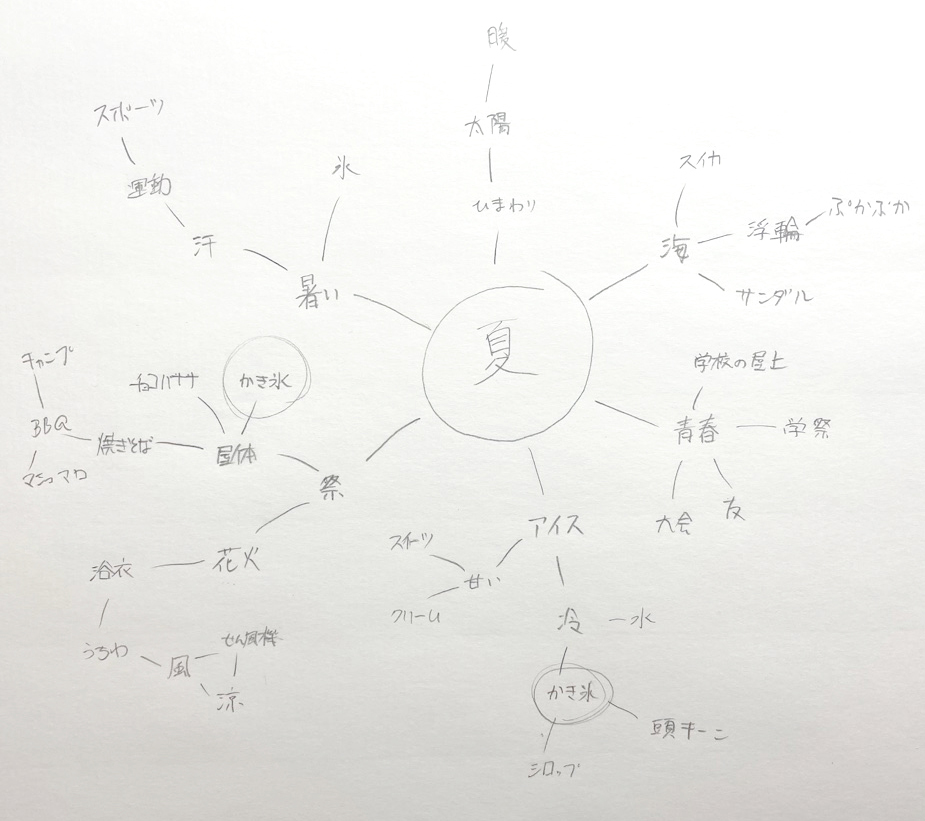
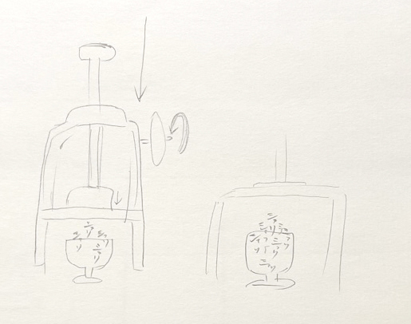
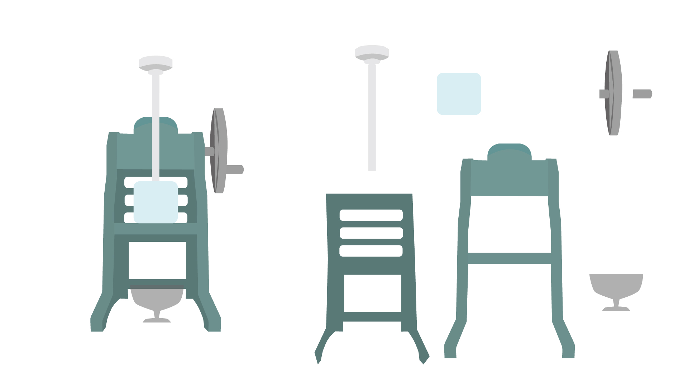

制作期間
2週間
使用ソフト・技術
Illustrator/After Effects
制作過程
01.夏のキーワードを書く
マインドマップで夏のキーワードを書き出します。 海やお祭りなど、暑い夏に欠かせないものはかき氷だと思いかき氷のアニメーションに決定しました。
02.ラフを描く
かき氷機から音の文字が出る様子をラフで描きます。 かき氷のシャリっとした音がとても好きで少し涼しく感じるため、その音をタイポグラフィで表現することにしました。
03.トレース
Illustratorでかき氷機をトレースします。 後にAfter Effectsで動かせるようにレイヤーをパーツごとに分けて作りました。
04.アニメーションを作る
After EffectsでIllustratorのパスを動かしていきます。 かき氷機の取手の回るアニメーションは、動きに合わせて拡大縮小して遠近感を考えて制作しました。 最後の「シャリ」が容器からストンと落ちてフェードアウトしていくところは 氷が溶けてなくなっていくようなイメージで作り工夫しました。
03.音を作る
シャーベットをスプーンでゴリゴリさせて録音しました。
まとめ
はじめてのアニメーションに挑戦しました。 細かいところまでこだわって地道に動かし続けて作ったため、とても苦労しました。 最初はただのパスがアニメーションになって動いていることに感動し、とても楽しい制作になったと思います。 何事も挑戦することの大切さを実感しました。